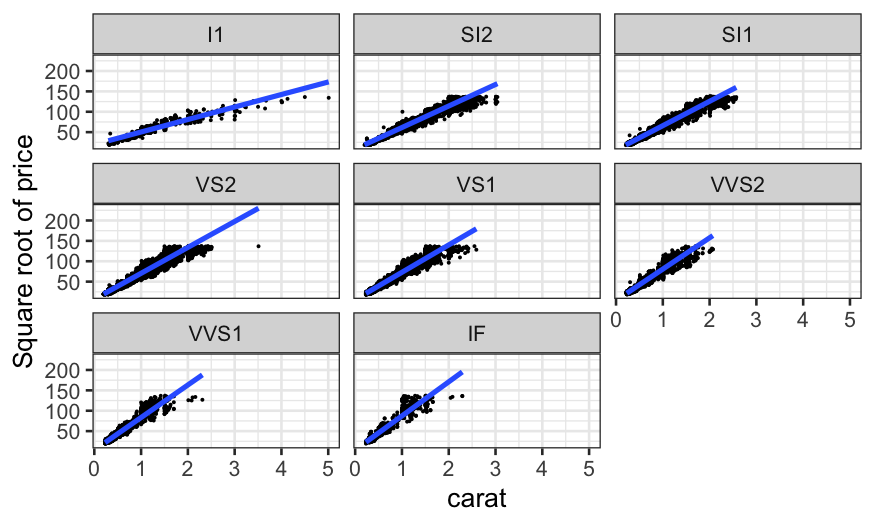
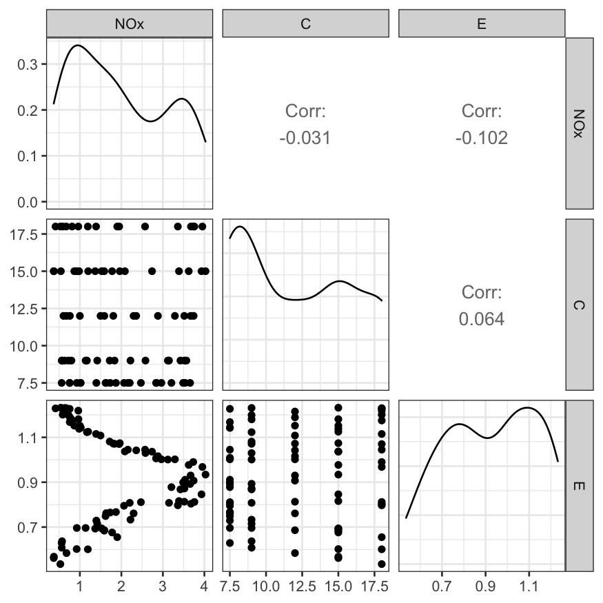
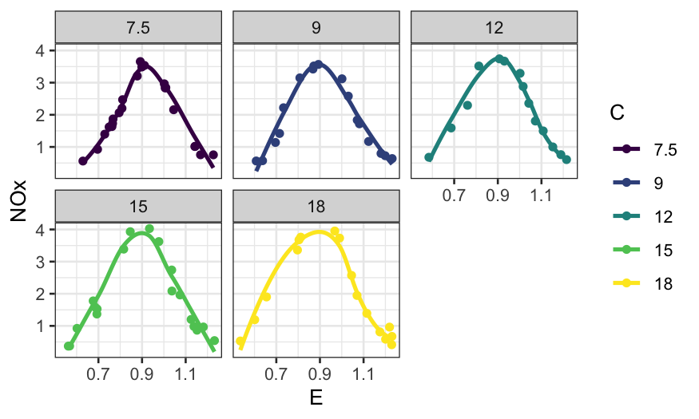
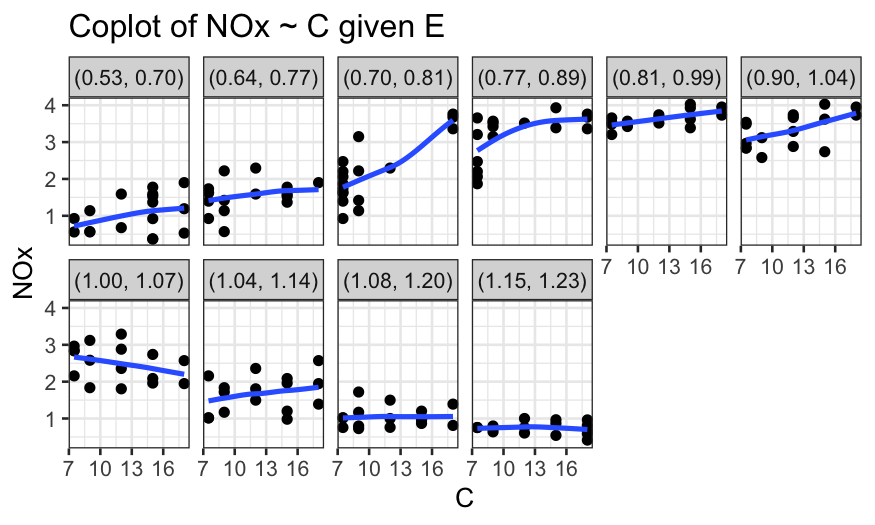
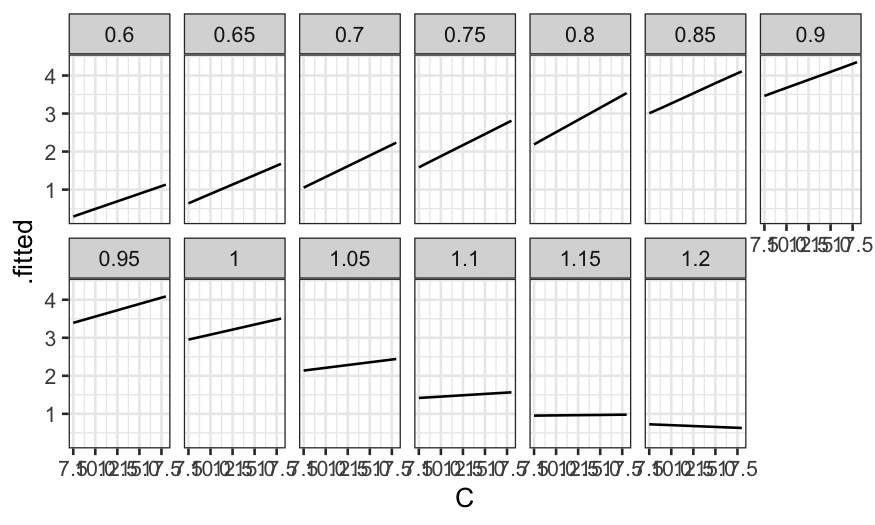

Then a coplot of the fitted values given C.
ggplot(ethanol_preds) +
geom_line(aes(x = E, y = .fitted)) +
facet_wrap(~ C, ncol = 3)
Julia Fukuyama
Reading: Cleveland pp. 184-190, 194-199, 204-205 (LOESS with more than one predictor variable)
Today: Trivariate data; coplots and interactions
Questions we will want to answer:
How can we describe the dependence of a response variable on two predictors?
How can we identify interactions between the predictors?
How can we model interactions between the predictors?
Suppose we have a response variable, \(y\), and two predictor variables, \(u\) and \(v\).
The interaction model is \[ y = \beta_0 + \beta_1 u + \beta_2 v + \beta_3 uv + \varepsilon \] with \[ \varepsilon \sim N(0, \sigma^2) \]
What does this mean when one of the variables is binary? If both are continuous?
Coplots help us answer the question “How does the relationship between two variables change given the value of a third variable?”
A coplot is defined by three variables:
response: The variable plotted along the \(y\)-axis.
predictor: The variable plotted along the \(x\)-axis.
given: The variable used for faceting. If the “given” variable is categorical, we facet in the usual way, with one facet for each value of the given variable. Otherwise, we break the observations into groups that have similar values of the given variable and facet on those groups.
We’ve seen coplots for categorical variables before. Remember our diamonds example from last time, where we were interested in the three variables:
price: How much the diamond sold for.
carat: How big the diamond is.
clarity: How clear it is. This is a factor or
categorical variable, higher clarities tend to be more rare and
expensive.
ggplot(diamonds, aes(x = carat, y = sqrt(price))) +
geom_point(size = .1) +
stat_smooth(method = "lm", se = FALSE) +
ylab("Square root of price") +
facet_wrap(~ clarity)## `geom_smooth()` using formula 'y ~ x'
This allows us to answer the question: “How does the relationship between carat and price change with clarity?”
We saw this example last time, in the ethanol dataset.
We had the variables
NOx: Concentration of NO plus NO2 (NOx), divided by
the amount of work the engine did.
E: The equivalence ratio at which the engine was
run, measuring the richness of the mixture of air and fuel (morue fuel =
higher E).
C: The compression ratio to which the engine was
set, that is, the maximum volume inside the cylinder (volume with piston
retracted) divided by the minimum volume inside the cylinder (volume
with piston at maximal penetration).
## Registered S3 method overwritten by 'GGally':
## method from
## +.gg ggplot2
Here we could condition easily on C because although it
is technically continuous, it only took five distinct values.
We made this plot:
ethanol = ethanol %>% mutate(Cfac = factor(C, levels = sort(unique(C)), ordered = TRUE))
ggplot(ethanol, aes(x = E, y = NOx, color = Cfac)) +
geom_point() + facet_wrap(~ Cfac) +
guides(color = guide_legend(title = "C")) +
stat_smooth(method = "loess", se = FALSE)## `geom_smooth()` using formula 'y ~ x'
in an attempt to answer the question of how the relationship between
NOx and E changes given C.
With continuous variables, instead of taking each facet to represent all the points with a single value of the given variable, we take each facet to represent all the points for which the value of the given variable lies in a certain interval.
Concretely:
Define \(I\) intervals \([a_1, b_1], [a_2, b_2], \ldots, [a_I, b_I]\).
Facet \(i\) of the coplot contains all the points for which the value of the given variable falls in the \(i\)th interval \([a_i, b_i]\).
Interpretation: facet \(i\) represents the conditional dependence of the response on the predictor when the value of the given variable is approximately \((a_i + b_i) / 2\).
How to define the intervals is up to you; there are defaults in R, or you can choose yourself.
Notes:
The intervals are allowed to overlap.
Wider intervals have the advantage that you have more points per facet, allowing you to see patterns more clearly.
Wider intervals have the disadvantage that they have lower resolution: if the nature of the dependence changes over the range of given values in the interval, it might be distorted or masked.
ggplot2 doesn’t have coplots built in, but we can make them if we work hard enough.
make_coplot_df = function(data_frame, faceting_variable, number_bins = 6) {
## co.intervals gets the limits used for the conditioning intervals
intervals = co.intervals(data_frame[[faceting_variable]], number = number_bins)
## indices is a list, with the ith element containing the indices of the
## observations falling into the ith interval
indices = apply(intervals, 1, function(x)
which(data_frame[[faceting_variable]] <= x[2] & data_frame[[faceting_variable]] >= x[1]))
## interval_descriptions is formatted like indices, but has interval
## names instead of indices of the samples falling in the index
interval_descriptions = apply(intervals, 1, function(x) {
num_in_interval = sum(data_frame[[faceting_variable]] <= x[2] & data_frame[[faceting_variable]] >= x[1])
interval_description = sprintf("(%.2f, %.2f)", x[1], x[2])
return(rep(interval_description, num_in_interval))
})
## df_expanded has all the points we need for each interval, and the
## 'interval' column tells us which part of the coplot the point should
## be plotted in
df_expanded = data_frame[unlist(indices),]
df_expanded$interval = factor(unlist(interval_descriptions),
levels = unique(unlist(interval_descriptions)), ordered = TRUE)
return(df_expanded)
}Once we have defined the function to make the expanded data frame,
the coplot is simply a faceted plot where we facet by
interval.
ethanol_expanded = make_coplot_df(ethanol, "E", 10)
ggplot(ethanol_expanded, aes(y = NOx, x = C)) +
geom_point() +
facet_wrap(~ interval, ncol = 6) +
geom_smooth(method = "loess", se = FALSE, span = 1, method.args = list(degree = 1)) +
scale_x_continuous(breaks = seq(7, 19, by=3)) +
ggtitle("Coplot of NOx ~ C given E")## `geom_smooth()` using formula 'y ~ x'
Now suppose we want to build a model that describes NOx as a function of E and C.
Our coplots have told us a couple things about the relationship:
There is an interaction between E and C.
Conditionally on E, the relationship between NOx and C looks roughly linear.
Conditionally on C, the relationship between NOx and E is non-linear, and doesn’t look like it belongs to a parametric family at all.
We have a response variable \(y\), a predictor variable \(x\), and \(n\) samples.
To find the value of the LOESS smoother with \(\lambda = 1\) (locally linear fit) at a point \(x_0\), we solve for the coefficients in the weighted regression problem \[ \text{min}_{\hat \beta_0, \hat \beta_1} \sum_{i=1}^n w_i(x_0) (y_i - (\hat \beta_0 + \hat \beta_1 x_i))^2, \]
To find the value of the LOESS smoother with \(\lambda = 2\) (locally quadratic fit) at a point \(x_0\), we solve for the coefficients in the weighted regression problem \[ \text{min}_{\hat \beta_0, \hat \beta_1, \hat \beta_2} \sum_{i=1}^n w_i(x_0) (y_i - (\hat \beta_0 + \hat \beta_1 x_i + \hat \beta_2 x_i^2))^2 \]
The weights are: \[ w_i(x_0) = T(\Delta_i(x_0) / \Delta_{(q)}(x_0)) \] where \(\Delta_i(x_0) = |x_i - x_0|\), \(\Delta_{(i)}(x_0)\) are the ordered values of \(\Delta_{i}(x_0)\), and \(q = \alpha n\), rounded to the nearest integer.
\(T\) is the tricube weight function: \[ T(u) = \begin{cases} (1 - |u|^3)^3 & |u| \le 1 \\ 0 & |u| > 1 \end{cases} \]
The value of the LOESS smoother at \(x_0\) is the fitted value of the weighted regression defined above evaluated at \(x_0\).
Now we have a response variable \(y\), a predictor variable \(x = (u, v)\), and \(n\) samples.
The parameters are still:
\(\alpha\): The span, controls the fraction of points that contribute to the local fit.
\(\lambda\): The degree of the local fit, usually \(1\), corresponding to a locally linear fit, or \(2\), corresponding to a local quadratic fit.
Suppose \(\lambda = 1\)
To find the value of the LOESS smoother at a point \(x_0 = (u_0, v_0)\), we solve for the coefficients in the weighted regression problem \[ \text{min}_{\hat \beta_0, \hat \beta_1, \hat \beta_2} \sum_{i=1}^n w_i(x_0) (y_i - (\hat \beta_0 + \hat \beta_1 u_i + \hat \beta_2 v_i ))^2, \]
The value of the LOESS smoother at \(x_0\) is then \(\hat \beta_0 + \hat \beta_1 u_0 + \hat \beta_2 v_0\).
If \(\lambda = 2\), to find the value of the LOESS smoother at a point \(x_0 = (u_0, v_0)\), we solve for the coefficients in the weighted regression problem \[ \text{min}_{\hat \beta_0, \hat \beta_1, \hat \beta_2, \hat \beta_3, \hat \beta_4, \hat \beta_5} \sum_{i=1}^n w_i(x_0) (y_i - (\hat \beta_0 + \hat \beta_1 u_i + \hat \beta_2 v_i + \hat \beta_3 u_i v_i + \hat \beta_4 u_i^2 + \hat \beta_5 v_i^2))^2, \]
The value of the LOESS smoother at \(x_0\) is then \(\hat \beta_0 + \hat \beta_1 u_0 + \hat \beta_2 v_i + \hat \beta_3 u_0 v_0 + \hat \beta_4 u_0^2 + \hat \beta_5 v_0^2\).
The weights are: \[ w_i(x_0) = T(\Delta_i(x_0) / \Delta_{(q)}(x_0)) \] with
\(\Delta_i(x_0) = \sqrt{(u_i - u_0)^2 + (v_i - v_0)^2}\)
\(\Delta_{(i)}(x_0)\) are the ordered values of \(\Delta_{i}(x_0)\)
\(q = \alpha n\), rounded to the nearest integer.
Since the two predictor variables are potentially on different scales, they are usually normalized using a robust estimate of the spread before the distances are computed. Some options
Median absolute deviation.
Trimmed standard deviation.
Cleveland suggests using a 10% trimmed standard deviation as the measure of spread for normalization.
What if we think some of the conditional relations are from a parametric family? For example, the dependence of NOx on C seems to always be linear, no matter what value of E we look at.
We can modify LOESS so that it fits some of the conditional relations globally instead of locally.
Let \(\hat g(u,v)\) be our fitted LOESS surface, and suppose we want \(\hat g(u, v)\), seen as a function of \(u\), to be from a parametric family (e.g. linear or quadratic).
To do this, we simply drop the \(u_i\)’s from our distances when computing the weights.
Suppose we want to modify locally linear LOESS in this way. To find the value of the LOESS smoother at a point \(x_0\), we find \(\hat \beta_0, \hat \beta_1, \hat \beta_2, \hat \beta_3\) to minimize \[ \sum_{i=1}^n w_i(x_0) (y_i - (\hat \beta_0 + \hat \beta_1 u_i + \hat \beta_2 v_i + \hat \beta_3 u_i v_i))^2 \]
The fitted value of the LOESS smoother at \(x_0\), \(\hat g(x_0) = \hat g(u_0, v_0)\), is then equal to \(\hat \beta_0 + \hat \beta_1 u_0 + \hat \beta_2 v_0 + \hat \beta_3 u_0 v_0\).
This leads to a fit that is locally linear in \(v\) and globally linear in \(u\), with different slopes in \(u\) conditional on different values of \(v\).
Locally quadratic fit in \(v\) with a globally quadratic fit in \(u\):
To find the value of the LOESS smoother at a point \(x_0\), we find \(\hat \beta_0, \ldots, \hat \beta_5\) to minimize \[ \sum_{i=1}^n w_i(x_0) (y_i - (\hat \beta_0 + \hat \beta_1 u_i + \hat \beta_2 v_i + \hat \beta_3 u_i v_i + \hat \beta_4 u_i^2 + \hat \beta_5 v_i^2))^2 \]
The fitted value of the LOESS smoother at \(x_0\), \(\hat g(x_0) = \hat g(u_0, v_0)\), is then equal to \(\hat \beta_0 + \hat \beta_1 u_0 + \hat \beta_2 v_0 + \hat \beta_3 u_0 v_0 + \hat \beta_4 u_i^2 + \hat \beta_5 v_i^2\).
Locally quadratic fit in \(v\) with a globally linear fit in \(u\):
To find the value of the LOESS smoother at a point \(x_0\), we find \(\hat \beta_0, \ldots, \hat \beta_4\) to minimize \[ \sum_{i=1}^n w_i(x_0) (y_i - (\hat \beta_0 + \hat \beta_1 u_i + \hat \beta_2 v_i + \hat \beta_3 u_i v_i + \hat \beta_4 v_i^2))^2 \]
The fitted value of the LOESS smoother at \(x_0\), \(\hat g(x_0) = \hat g(u_0, v_0)\), is then equal to \(\hat \beta_0 + \hat \beta_1 u_0 + \hat \beta_2 v_0 + \hat \beta_3 u_0 v_0+ \hat \beta_4 v_i^2\).
Now we know what the following arguments in the LOESS function do:
parametric: Default is FALSE. You can
give the function names of variables that you want LOESS to fit globally
instead of locall.
drop.square: Default is FALSE. If you
have a variable you’re fitting globally instead of locally and
you want the fit to be linear instead of quadratic, you can specify
drop.square = TRUE.
normalize: Default is TRUE. Should the
predictor variables be normalized to have the same spread before
computing distances?
ethanol_lo = loess(NOx ~ C * E, data = ethanol, span = 1/3, parametric = "C",
drop.square = "C", family = "symmetric")What do the parameters mean here?
C * E means we want interactions between
C and E.
parametric = "C" means that conditional on
E, we want the fitted function to be linear.
drop.square = "C" means that we don’t want a squared
term in our conditional model of NOx given
C.
family = "symmetric" means we are using a robust
fit.
What do the fitted values look like? First let’s make a coplot of the
fitted value given E.
prediction_grid = data.frame(expand.grid(C = c(7.5, 9, 12, 15, 18), E = seq(0.6, 1.2, by = .05)))
ethanol_preds = augment(ethanol_lo, newdata = prediction_grid)
ggplot(ethanol_preds) +
geom_line(aes(x = C, y = .fitted)) +
facet_wrap(~ E, ncol = 7)
Then a coplot of the fitted values given C.